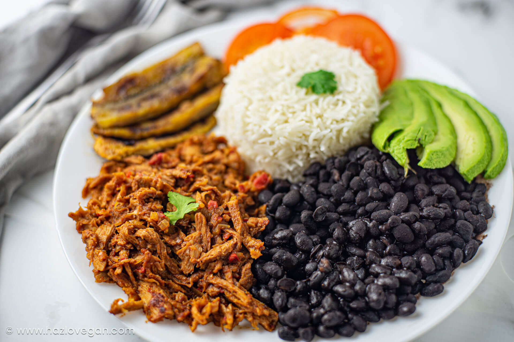

The Unforgetable Pabellon
Pabellon Criollo is a traditional Venezuelan dish consisting of shredded beef, black beans, white rice, and fried plantains.

- 1 lb shredded beef
- 1 can black beans
- 2 cups white rice
- 2 ripe plantains
- Cook the shredded beef
- Prepare black beans
- Cook white rice
- Fry the ripe plantains
- Enjoy it